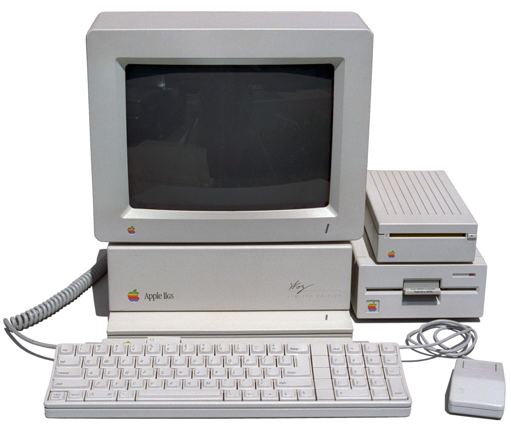

Apple II
"To me, a personal computer should be small, reliable, convenient to use and inexpensive"
With these words Stephen Wozniak presented the ideas behind the construction of the Apple II in 1977. With his friend Steve Jobs decided to make the Apple I more accessible to common people. Therefore they re-elaborated the old one putting the motherboard into a plastic case implemented with a keyboard and a monitor. The motherboard was roughly the same of the Apple I, with the MOS 6502 microprocessor and a 4kB RAM expandable to 64kB. The OS was Apple DOS, programmed with the BASIC language. Originally it used the audio cassette for data storage, but then Apple introduced an external floppy disk drive called Disk II. The Apple II was provided with multiple expansion slots to plug in for example a printer interface or a modem interface.
Appearance of Colours
The Apple II was one of the first computers with a colour display. In the monitor the colour was encoded on signals, these signals were translated on the display in pixels. With some combinations of pixels the computer could display 6 different colours. The coming of colours was showed with the rainbow theme on the Apple logo, and was been used until 1998.
Evolution
The Apple II Plus presented in 1979 was similar to the Apple II but included the Applesoft BASIC programming language and had an improved graphic and a disk-booting support in ROM.
The Apple IIe was presented in 1983. It was more powerful and cheaper, it was implemented with an upper-lower case display and a standard 64kB RAM. With this computer was introduced the DuoDisk: two Disk located in one single case, between the monitor and the computer. The Apple IIe was the most popular Apple II ever built and was widely considered the "workhorse" of the line.
The Apple IIe was followed by the Apple IIc in 1984. This computer used the Snow White design language for the first time and was produced with a built-in MOS 65C02 microprocessor. It had a 128kB RAM that with some expansion could arrive to 1MB! This machine supported a 16 colours high resolution display. It's considered the first portable computer because was the first easily carryable.
In 1986 appeared the Apple II GS . It's the most powerful computer of the Apple II line. It featured for the first time a 16-bit microprocessor,the 65C816, and had a RAM expandable up to 8MB. Also the graphic was implemented: on the screen could be displayed up to 256 colours with a maximum of 16 per line. In the operative system was introduced for the first time the finder to manage disks and files, open documents or run applications.
External Links
- [Visited on 06/11/2014] Image "Wikipedia" Photograph by Rama, Wikimedia Commons, Cc-by-sa-2.0-fr.
- [Visited on 06/11/2014] Image "Wikipedia" Under fairy use.
- [Visited on 06/11/2014] Image "apple2history" Under fairy use.
- [Visited on 06/11/2014] Image "apple-history" Under fairy use.
- [Visited on 06/11/2014] Image "Wikipedia" Under fairy use.
- [Visited on 06/11/2014] Image "apple2history" Under fairy use.
- [Visited on 06/11/2014] Apple II
{kind=link}
{kind=link}
{kind=link}